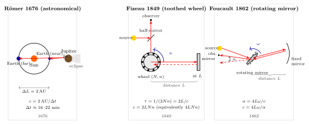

光速究竟怎么被测出来?
上一节我们谈激光 — 一种高度相干的光. 相干性本身预设了光是在时间里一步步传播、一段段积累相位的实体; 如果光是瞬时的, 就没有"相位"这回事, 也就没有激光. 所以, 光要有速度, 这是现代光学的一个默认前提. 可是这个速度有多快? 它是不是真的有限?
今天的答案是人人都背得出来的: 每秒约三十万公里, 精确地, $c = 299\,792\,458\ \mathrm{m/s}$. 但这个数字不是一开始就站在那里的. 它是人类用三个世纪的时间, 从天上一点点拉到地上、从地上一点点拉进实验室, 最终被一段光尺子定义出来的. 这一节就沿着这条路走一遍: 伽利略在山头点灯笼, Römer 仰望木星, Fizeau 在巴黎郊外架齿轮, Foucault 把全套仪器搬进一间房, Michelson 把精度推到第六位小数 — 直到 1983 年, 米被光重新定义, "测光速"这件事从此不再存在.
一、伽利略的失败 — 为什么它必须失败
伽利略在 1638 年出版的《两种新科学的对话》里记了一个思想实验式的尝试: 两个人各站一个山头, 夜里, 一人举起灯笼, 另一人看见光后立即举起自己的灯笼, 第一人再看见对方的光 — 通过来回时间减去人的反应时间, 估计光速.
这个实验的物理思想完全正确: 测两个事件 (光发出 / 光返回) 之间的时间差, 除以来回距离. 它失败只是因为数字不合适. 设两山相距 $L$, 则理论上的往返时间是 $\tau = 2L/c$. 代入伽利略可能用的 $L \sim 1$ km:
$$ \tau = \frac{2\times 10^3\ \mathrm{m}}{3\times 10^8\ \mathrm{m/s}} \approx 6.7\times 10^{-6}\ \mathrm{s} \tag{1} $$
七微秒. 这个量级远远小于任何人的反应时间 (约 0.2 秒), 更远小于 17 世纪最好的时钟 — 当时连秒针都还没有普遍化. 伽利略自己也已经意识到, 他测到的不是光速, 而是两个人的神经系统. 他只能给出一个下界: 如果光真的有速度, 那它至少比声音快很多.
从这个失败, 可以读出一条方法论: 想在地面尺度测光速, 你必须有比微秒更短的时间分辨率, 或者比千米更长的光程. Römer 选了后者 — 他把光程拉到一个天文单位.
二、Römer 与木星卫星 — 把基线拉到 2 AU
1676 年, 丹麦天文学家 Ole Rømer 在巴黎天文台做了一件完全不是为了测光速的事: 他在系统地观测木星第一颗卫星 Io 的蚀 — 每当 Io 转到木星背后, 就会被木星的阴影"吞掉"几小时, 再从阴影里"走出来". Io 的公转周期很稳定, 约 42.5 小时一次, 所以理论上这些食、出食的时刻应该能像时钟一样预言.
Rømer 发现一件奇怪的事: 当地球在公转轨道上正在远离木星时, Io 出食的时刻每次都比预言晚一点点; 整个"远离半年"累积下来, 居然差了约 22 分钟. 半年后地球转回, 开始朝木星走回去, 出食时刻又一次一次提前. 他的解释极为干净: 这不是 Io 的问题, 是光走的距离在变 — 当地球在轨道的远端, 光要多跑一个地球轨道直径 $2\,\mathrm{AU}$ 才能到达我们.
写成方程:
$$ c = \frac{2\,\mathrm{AU}}{\Delta t} \tag{2} $$
这里 $\Delta t$ 是地球从最近到最远, 累计起来 Io 出食迟到的总时间.
代入数字. 一个天文单位 $\mathrm{AU} \approx 1.496\times 10^{11}$ m. Rømer 当时用的 $\Delta t \approx 22$ 分钟 $= 1320$ s (这个数字他的同事 Huygens 后来略调整为 $\sim 16$ 分钟, 其实后者更接近正确值, 大约 $16.7$ 分 $\approx 1000$ s). 我们用 Rømer 原始的 22 分钟走一遍:
$$ c \approx \frac{2\times 1.496\times 10^{11}\ \mathrm{m}}{1320\ \mathrm{s}} \approx 2.27\times 10^{8}\ \mathrm{m/s} $$
与正确值 $3.00\times 10^8$ m/s 相比偏低约 25%. 主要误差来自两件事: 他对"半年累积迟到"的时刻卡得不够准, 另外当时的 AU 值也还有误差. 但方向完全对: 光的速度有限, 而且这个数字是十的八次方量级的米每秒. 这是人类历史上第一次把一个具体的数字钉在光速上.
半个世纪之后, 1728 年英国天文学家 James Bradley 又从另一个方向给了这个数字一个独立的确认. 他观测恒星, 发现所有恒星在一年之内都会画一个小小的椭圆 — 这不是视差 (视差是几何的), 而是光行差: 地球以速度 $v_\oplus$ 在轨道上飞, 从望远镜看出去, 来自恒星的光相对于望远镜有一个小角度 $\alpha$ 的偏转,
$$ \tan\alpha \approx \frac{v_\oplus}{c} \approx \frac{29.8\ \mathrm{km/s}}{3.0\times 10^5\ \mathrm{km/s}} \approx 9.9\times 10^{-5}\ \mathrm{rad} \approx 20.5'' $$
观测到的正是约 20.5 角秒. Bradley 给出了 $c \approx 3.01\times 10^8$ m/s — 第一次逼近到百分之一的精度. 天文学家两度证明了: 这个速度不是我们凑出来的, 它是真实存在的自然常数.

三、Fizeau 与 Foucault — 把光速带回地面
Rømer 和 Bradley 用的是天文基线. 但天文基线有一个根本的限制: 你测的不只是光, 还顺带测了太阳系的几何 — AU 到底多大, 迟到时间 $\Delta t$ 怎么卡, 都含有天文学自身的不确定度. 要让光速成为一个纯粹的光的常数, 它必须能在地球表面、用人造仪器、独立测出来.
这就需要一种能把微秒级时间差换成宏观可观测几何的巧思. Armand Hippolyte Fizeau 在 1849 年做到了这件事.
Fizeau 的齿轮 (1849)
Fizeau 的装置本质是一个光学开关. 一束光从光源出发, 经半反射镜折向前方; 在光路上放一只高速旋转的齿轮 — 齿与齿之间有空隙. 光从某一个空隙穿过, 跑到远方 (他把反射镜架到巴黎市郊的 Suresnes, 距离 Montmartre 实验室约 $L = 8633$ m), 反射后原路返回. 如果齿轮转得合适, 返回的光正好通过同一空隙回到观察者眼睛; 如果齿轮再转快一点, 返回的光会被下一个齿挡住 — 观察者看到光消失. 这就是他要的临界条件.
设齿轮有 $N$ 齿 (Fizeau 用的是 $N=720$), 转速为 $n$ 转每秒. 每秒通过某一固定点的齿 + 间隙总数是 $2Nn$ (每齿后紧跟一个间隙). 因此从"光经过一个间隙"到"下一个齿堵住同一位置"的时间是
$$ \tau = \frac{1}{2Nn} $$
这必须等于光走一个来回的时间 $2L/c$:
$$ \frac{2L}{c} = \frac{1}{2Nn} \quad\Longrightarrow\quad c = 4LN n \tag{3} $$
(注意这里的 4 来自"齿+齿隙= 两个相位"的约定; 不同文献写法会差一个因子, 用齿数 $N$ 与空隙数相等, $c = 2L\cdot 2Nn$.)
代入 Fizeau 的数据. 他观测到当齿轮转速达到 $n \approx 12.6$ 转/秒时, 返回光第一次被完全挡住. 于是
$$ c = 4 \times 8633\ \mathrm{m} \times 720 \times 12.6\ \mathrm{s^{-1}} \approx 3.13\times 10^{8}\ \mathrm{m/s} $$
与现代值偏高约 4.5%. 考虑他用的是齿轮而不是精密光学斩波器, 这个结果已经相当惊人了 — 光速第一次被人在地球上、不依赖任何天体, 独立测出来了.
Foucault 的旋转镜 (1862)
13 年后, Léon Foucault 改用旋转镜取代齿轮. 原理更干净: 光打到一面以角速度 $\omega$ 高速旋转的镜子上, 反射到距离 $L$ 的远方固定镜, 再原路返回. 但在光来回这段时间 $\tau = 2L/c$ 里, 旋转镜又转过了一个角度 $\theta = \omega\tau$. 返回的光被反射镜以 两倍 这个角度偏折 (反射的几何: 镜面转 $\theta$, 反射光偏 $2\theta$), 所以在观察平面上落点相对于原点位移了一个可测的小角 $\alpha = 2\omega\tau = 4L\omega/c$. 反解:
$$ c = \frac{4L\omega}{\alpha} $$
这个装置的妙处在于: 只要 $\omega$ 足够大, 光程 $L$ 就可以缩到实验室尺度. Foucault 把 $L$ 压到 $\sim 20$ m, 把旋转镜推到每秒 800 转, 测出 $c \approx 2.98\times 10^{8}$ m/s — 误差首次降到千分之几, 而且全套仪器搬进一间屋子就装得下.
从 Fizeau 到 Foucault, 再到 Michelson 在 1880s-1930s 的系列改进 (把旋转镜改为多面棱镜, 把光程拉到加州圣安东尼奥山到威尔逊山的 35 公里, 1926 年给出 $c = 299\,796\pm 4$ km/s), 每一代测量都把精度提高一位. Michelson 为这一系列工作获得 1907 年诺贝尔物理奖 — 也是第一个获诺贝尔奖的美国科学家.
四、极限、历史与 1983 的转折
极限: 为什么实验室里要巨大的仪器
我们可以问一个干净的问题: 如果我想在我书桌上 (光程 $L = 1$ m) 用 Foucault 的方法测光速, 需要多快的旋转镜?
要得到一个能分辨的偏折, $\alpha$ 至少要在 $10^{-3}$ rad 这个量级 (更小就看不清了). 由 $c = 4L\omega/\alpha$ 反推:
$$ \omega = \frac{c\,\alpha}{4L} = \frac{3\times 10^8 \times 10^{-3}}{4\times 1} \approx 7.5\times 10^{4}\ \mathrm{rad/s} $$
也就是约 $1.2\times 10^4$ 转/秒, 即每分钟 70 万转 — 这已经接近一个小型涡轮的极限, 镜面边缘线速度趋近百米每秒, 机械应力非常大. 这就是为什么 Foucault 要把 $L$ 加到 20 米, Michelson 要把 $L$ 加到几十公里: 在有限的旋转速度下, 光程越长, 需要的机械精度就越低. 另一条路 — 做得更短 — 必须用电子而不是机械斩波, 这要等到 20 世纪中期后的光电倍增管和皮秒激光脉冲. 光速测量的全部历史, 可以看作"光程"与"时间分辨率"之间的一场交易.
历史一览
- 1638 · 伽利略山头灯笼 — 失败, 但提出了方法论.
- 1676 · Rømer 观测 Io 蚀 — 首次得出 $c$ 有限且 $\sim 2.2\times 10^8$ m/s.
- 1728 · Bradley 光行差 — 独立确认 $c \sim 3.0\times 10^8$ m/s.
- 1849 · Fizeau 齿轮 — 首次地面测量, $c \approx 3.13\times 10^8$ m/s.
- 1862 · Foucault 旋转镜 — 精度进入千分之几, 实验室尺度.
- 1880s-1930s · Michelson 系列 — 精度进入十万分之几, 1907 年诺奖.
- 1960-1970s · 稳频激光 + 频率链, 精度达到 $10^{-9}$.
- 1983 · 国际计量大会 CGPM 把 $c$ 定义 为 $299\,792\,458$ m/s, 米由此改用 "光在真空中 1/299 792 458 秒内走的距离" 来定义.
1983 的转折: 从测量到定义
1983 年之前, 光速是被测量的常数: 一边是越来越精密的光学干涉, 另一边是越来越精密的铯原子钟. 米 (基于氪-86 波长) 和秒 (基于铯原子跃迁) 是彼此独立定义的, 所以 $c = \mathrm{length/time}$ 是可测量. 但这个链条里, 最大的不确定来自长度 — 把一个波长的绝对长度标定到米, 比把时间比到秒难一个量级.
CGPM 在 1983 年做了一个釜底抽薪的决定: 不再用独立的长度基准. 把 $c$ 定义为 $299\,792\,458$ m/s (恰取当时最好的测量中心值), 再把"米"改写为"光在 $1/299\,792\,458$ 秒里走的距离". 这样, $c$ 不再是被测量的, 它变成了换算系数; 测量两点距离的精度, 从此完全由时间的精度决定 — 而时间的精度比长度的精度高好几位.
这件事在哲学上很有意思: 三百多年的测量史, 终点不是"测出一个更准的 $c$", 而是"不再需要测 $c$". 一个物理常数被升格为定义常数. 这恰恰说明, 光速不仅是一个自然数字, 它已经渗透到我们测量空间本身的结构中.
小结
"光速是多少"这个问题, 三百年来答案没有变过数量级 — 十的八次方米每秒 — 变的只是小数点后面的位数. 从 Rømer 把地球作钟摆测木星卫星, 到 Fizeau 把齿轮当快门, 到 Foucault 把旋转镜塞进实验室, 到 Michelson 把精度推到亚千分之一, 再到 1983 年光速被直接定义 — 这条线揭示了光的一个核心性质: 它有一个普适、绝对、可以当作尺子的速度. 下一节我们将看到, 这个数字 $c$ 不是实验偶然 — 它从 Maxwell 方程组里自己跳出来, 等于 $1/\sqrt{\varepsilon_0\mu_0}$. 到那时, 我们才真正回答"光为什么以这个速度跑".
▲